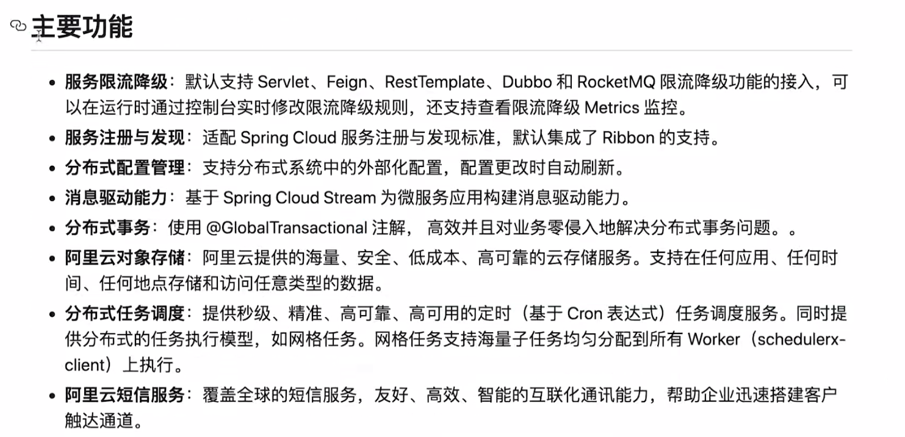
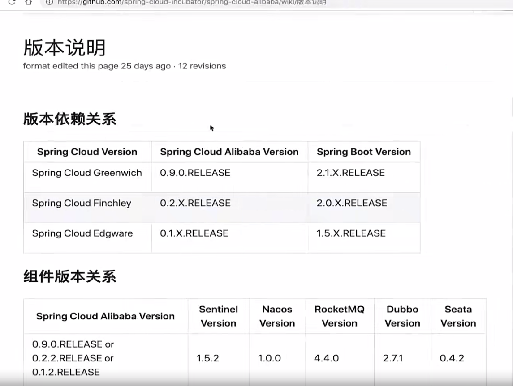
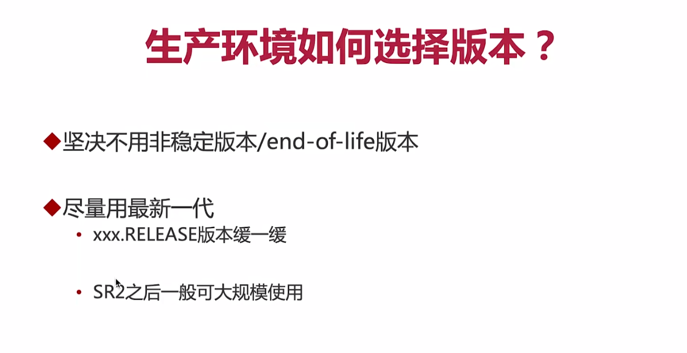
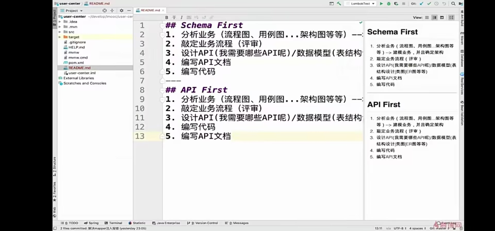

Cloud Alibaba从入门到进阶
对于大型复杂系统、高并发系统、需求变更很快的系统都可以使用Cloud进行搭建。
Cloud Alibaba属于Cloud的子项目，可以理解成是一直由阿里巴巴维护的新项目，是一个正在孵化的项目，并没有完全进入SpringCloud正式项目中。
Cloud Alibaba的主要功能如下（来源于官方文档）

Cloud的版本兼容性（和SpringBoot）
这里涉及到一个比较重要的概念那就是版本控制
有语义化的版本控制,比如我们在安卓上常见的1.2.3.release
1代表主版本,代表了第几代产品,一般在架构上都进行了大的改动
二代表次版本主要是一些功能的增加,架构没有发生大的变化,都是兼容的
三代表增量版本,比如一些bug的修复
Release代表里程碑在release之前呢有M1 M2版本,另外还有snapshot代表开发版
而Spring cloud的版本控制和普通的语义化的版本控制有一些区别
Spring cloud的版本采用了各个英国伦敦站的地名作为大版本,然后采用release SR1,2,3,4等来进行具体小版本的表示
release代表正式版,Sr代表service release(bug修复版本)

在生产环境中的在生产环境中的注意事项版本注意事项

尽量使用最新一代的版本的原因是release版本是属于第一个正式版，注意我们此时用的是生产环境,release并没有经过一个大量的测试，而SR版本一般经过了大量的企业测试，并且经过了几次的bug修复说明可以得到大范围的一个应用
微服务项目如何进行拆分？
业界理论拆分原则：
DDD(Domain Driven Design)：领取驱动设计，相比较面向对象设计分工更复杂，强调各分工使用统一的语言，比如UML
面向对象，一般是三层的实体架构，byName/byVerb，类似于根据实体的状态和动作设计模式。
在具体实践设计上分为以下两种：
面向程序职责设计 或者 面向通用性设计
以下为解读：
比如设计一个电商系统，日志系统为其中一个模块，那么该模块根据职责设计可以设计成日志读和日志写两个服务，当然可以继续拆分或者合并，而面向通用性的粒度更大，直接将日志设计成一个通用模块，不对其中进行细分。
附一下我们设计项目架构的常用思路，有两种：

可以看到design数据库等步骤是位于之后的，所以对于我们学习中遇到的首先设计数据库是不对的，要先确定业务流程，后来设计对应的数据库
微服务之间的调用
我们知道微服务之间是通过轻量级的进程进行调用的（比如A服务byId查询出userId来发送给服务B进行获取具体的用户信息），而服务又是通过MVC也就是API调用的，
我们在此项目中使用的是http连接，也就是TCP建立连接基础上访问资源路径也就是接口（即调用服务）。
前面我们在远程调用服务使用的一般是RPC，也就是将服务进行注册然后Reference调用，是需要一体完全配置好服务的，而我们这里可能只需要get一下接口就好了，不需要对被调用服务进行管理，那么我们直接使用RestTemplate。
RestTemplate
RestTemplate这个类是 Spring 框架提供的一个工具类，RestTemplate 提供高度封装的接口，RestTemplate 是一个同步的 Rest API 客户端。
方法我们大致可以分为三组：
- getForObject —- optionsForAllow 分为一组，这类方法是常规的 Rest API（GET、POST、DELETE 等）方法调用；这里只是获取返回对象，如果需要的是一个Response整体，如需要获取StatusCode，那么需要用Entity方法，获取到一个Entity
的对象，this.object就相当于getForObject结果。 - exchange：接收一个
RequestEntity参数，可以自己设置 HTTP method，URL，headers 和 body，返回 ResponseEntity；- execute：通过 callback 接口，可以对请求和返回做更加全面的自定义控制。
普通项目升级微服务项目的三个要点
服务之间是进行调用的，那么如果某个服务地址发生变化怎么办？（比如服务器升级换高配很正常，但是调用地址url是写死的）
如何实现服务的实例之间的负载均衡？
如果微服务中心挂掉怎么办？（实现高可用）
微服务问题优化一般的解决思路：
查看已有问题—>进入微服务组件（拆分微服务）—>架构上的继续优化
PS：修改Linux环境变量位置
全局：/etc/profile
个人用户：~/.bash_profile 直接export PATH = “路径”即可添加
添加完之后source 某文件 刷新一下。
If you like this blog or find it useful for you, you are welcome to comment on it. You are also welcome to share this blog, so that more people can participate in it. If the images used in the blog infringe your copyright, please contact the author to delete them. Thank you !